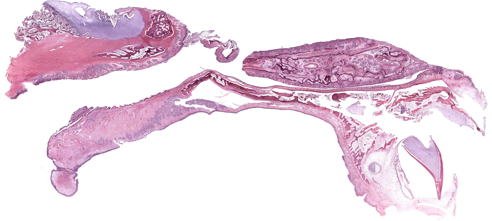
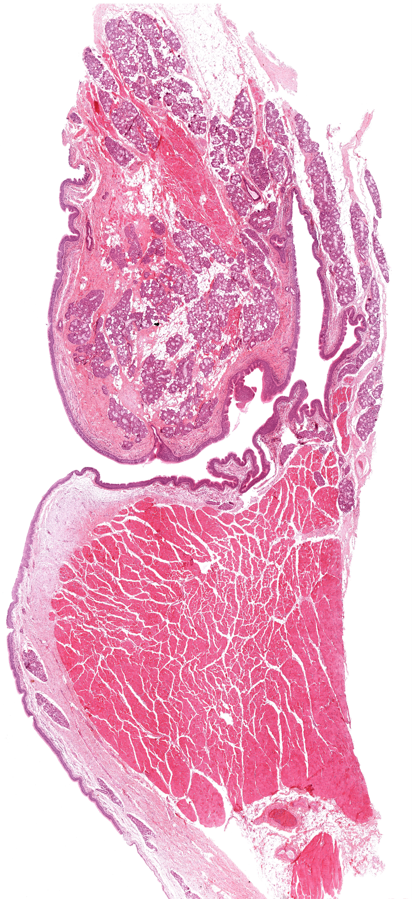
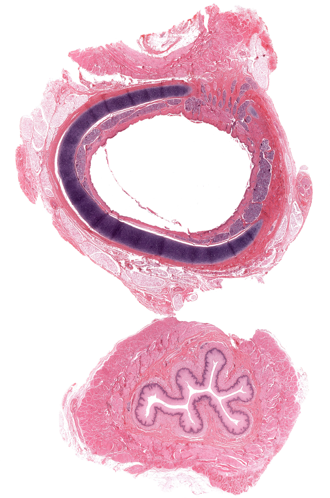
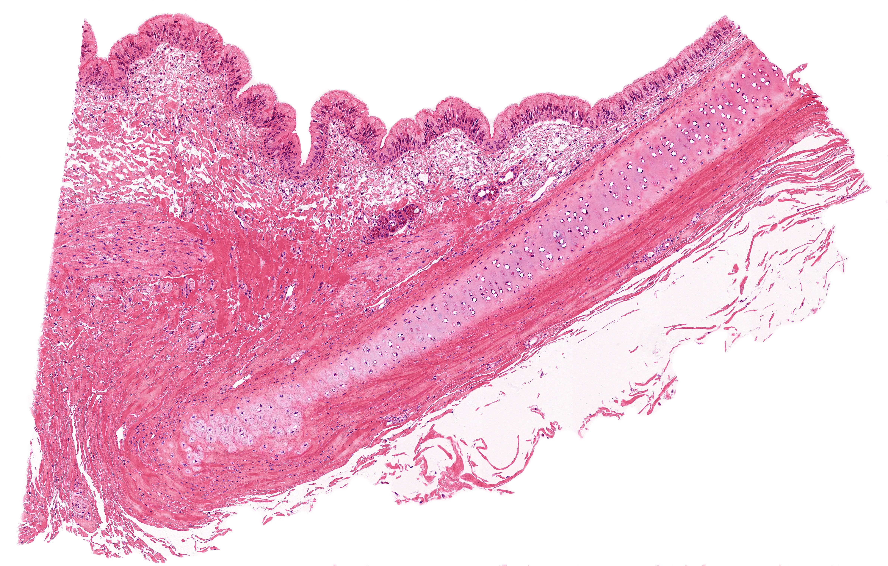
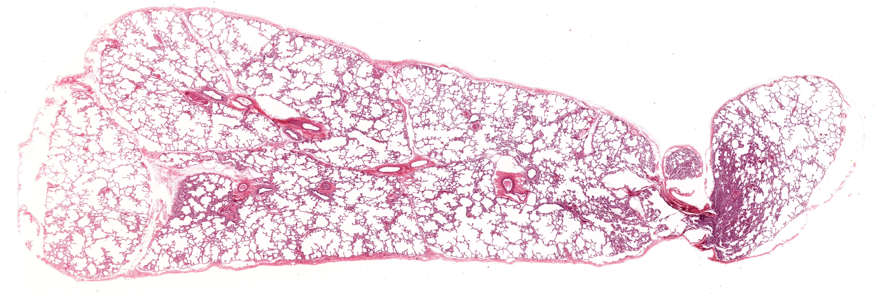
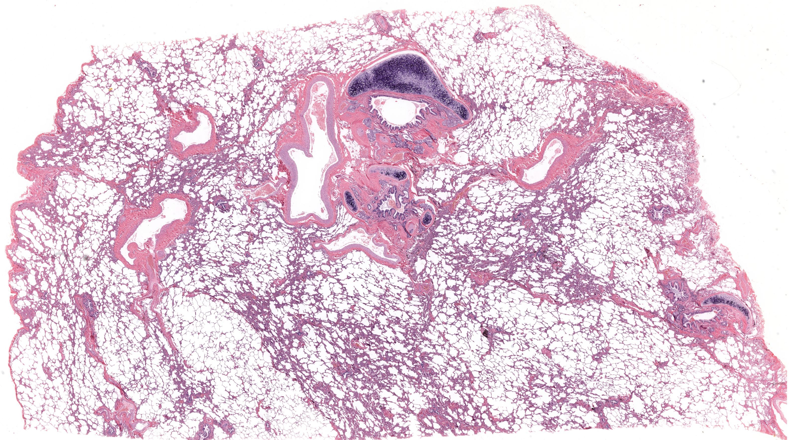
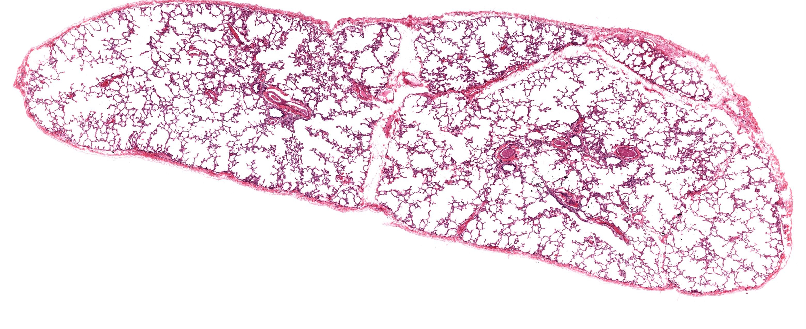
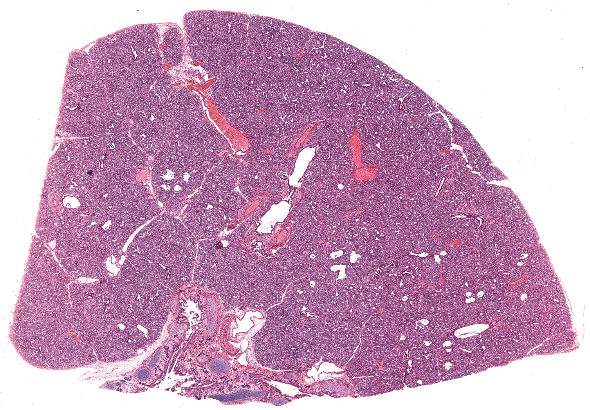
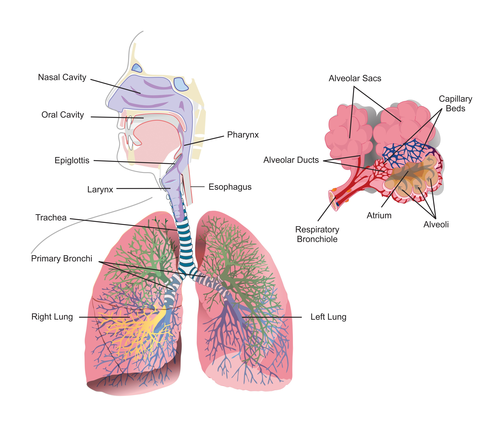

Chapter 17 · 器官系统
呼吸系统
Respiratory System · 6 小节 · 10 张切片 · 14 张电镜 · 本地概览 11 张
本章导语
呼吸系统从鼻腔到肺泡是一条连续管道与一道气体交换界面。本章按空气通路自外向内推进：先看鼻腔与喉的黏膜类型及软骨支架，再确认气管壁的分层结构与气管腺，随后依支气管各级分支进入肺，把握软骨与腺体逐渐消失、肺泡逐渐出现这一主线，最后借胎儿肺理解肺泡发育的阶段性。
复习重点
- 呼吸道黏膜多为假复层纤毛柱状上皮，含杯状细胞
- 气管壁分黏膜、黏膜下层和外膜，外膜含透明软骨环
- 气管腺位于黏膜下层，导管开口于黏膜表面
- 小支气管仍有软骨片，细支气管的软骨与腺体消失
- 终末细支气管与呼吸性细支气管以壁上有无肺泡开口区分
- 肺泡上皮由 I 型与 II 型细胞构成，肺泡隔内含毛细血管
易混淆对比
- 气管 vs 食管：上皮类型与支架：气管为假复层纤毛柱状上皮并有透明软骨环，食管为复层扁平上皮且无软骨
- 终末细支气管 vs 呼吸性细支气管：管壁是否出现肺泡开口，出现者为呼吸性细支气管
- 喉的声襞 vs 喉的前庭襞：上皮类型与固有层内容：声襞为复层扁平上皮并含声韧带
待核验译名：Fetal Lung 中的腺状期与小管期译名沿用国内教材的胚胎肺分期，英文标题只标 Fetal Lung 而未细分期别；Nasal and Oral Cavities 一节同时含鼻腔与口腔黏膜，中译合并为鼻腔与口腔黏膜
阅读提示：本页中文要点为自编复习笔记，不是原站正文的翻译；标本图像为经作者书面许可保存的中分辨率概览，每张卡片保留 © 署名与原页面链接，“原站本章/原站切片”可查看高倍与结构标注。本站为 Histology Guide 的非官方中文学习改编版，未经其认可或背书。
鼻腔与口腔黏膜
Nasal and Oral Cavities
- 鼻腔黏膜依部位分为嗅部与呼吸部，两部的上皮类型不同。
- 呼吸部黏膜为假复层纤毛柱状上皮，固有层内含丰富静脉丛与腺体。
- 嗅部上皮为假复层柱状上皮，由嗅细胞、支持细胞与基细胞组成。
- 鼻甲黏膜固有层的静脉丛可充血肿胀，参与调节吸入空气的温湿度。
- 口腔黏膜多为复层扁平上皮，固有层内含小型唾液腺。
低倍镜低倍镜区分鼻甲黏膜面与骨或软骨支架，确定上皮所在方位。
高倍镜高倍镜辨认假复层纤毛柱状上皮的纤毛层与杯状细胞。
易混提示：嗅部与呼吸部上皮同属假复层，区别在于有无嗅细胞与色素颗粒。
相关标本 · 1

点击图片放大 · 本地概览
MH 134 Nasal Conchae and Palate
鼻甲与腭（H&E）
H&E
本地概览
4577×2056
图像 © Histology Guide 及/或原始贡献者 · 非商业教育用途，经许可保存；原页面链接见下方
会厌
Epiglottis
- 会厌以弹性软骨为支架，两侧黏膜的上皮类型随部位而变。
- 朝向口腔面为复层扁平上皮，朝向喉腔面为假复层纤毛柱状上皮。
- 弹性软骨基质内可见大量交织的弹性纤维网，软骨细胞散在其中。
- 固有层结缔组织较疏松，内含腺体与丰富血管。
低倍镜低倍镜观察弹性软骨板的形态与两侧上皮的类型差异。
高倍镜高倍镜确认软骨基质内弹性纤维着色深，细胞位于陷窝内。
易混提示：会厌两侧上皮不同，判断方位须结合软骨形态与腔面朝向。
相关标本 · 1

点击图片放大 · 本地概览
MH 038-039 Epiglottis
会厌（弹性软骨，H&E）
H&E/Verhoeff
本地概览
2819×1001
图像 © Histology Guide 及/或原始贡献者 · 非商业教育用途，经许可保存；原页面链接见下方
喉（黏膜与软骨）
Larynx
- 喉壁由黏膜、软骨与肌肉构成，黏膜形成前庭襞与声襞。
- 声襞表面为复层扁平上皮，其内为致密结缔组织构成的声韧带。
- 喉黏膜大部为假复层纤毛柱状上皮，含杯状细胞，固有层内有腺体。
- 喉软骨兼有透明软骨与弹性软骨，切片中应注意基质与纤维的差异。
低倍镜低倍镜定位喉腔与软骨支架，寻找上皮类型转换的部位。
高倍镜高倍镜比较声襞的复层扁平上皮与其余部位的纤毛柱状上皮。
易混提示：声襞上皮为复层扁平，是呼吸管道上皮的例外，不要一概认作假复层。
相关标本 · 1

点击图片放大 · 本地概览
MH 135 Larynx
喉（声襞，H&E）
H&E
本地概览
3395×7383
图像 © Histology Guide 及/或原始贡献者 · 非商业教育用途，经许可保存；原页面链接见下方
气管
Trachea
- 气管壁由黏膜、黏膜下层和外膜构成，三层界限清楚。
- 上皮为假复层纤毛柱状上皮，含杯状细胞，游离面纤毛明显。
- 黏膜下层含较多气管腺，腺导管开口于黏膜表面。
- 外膜内有 C 形透明软骨环，缺口朝向食管侧，由平滑肌封闭。
- 气管与食管常在同一张切片上并列出现，可比较二者的上皮与肌层。
低倍镜低倍镜先找透明软骨环，据此定位气管并确认腔面方位。
高倍镜高倍镜观察纤毛层、杯状细胞与黏膜下层腺体的导管。
易混提示：气管腺位于黏膜下层，勿与黏膜上皮内的杯状细胞混为一谈。
相关标本 · 3

点击图片放大 · 本地概览
MH 110 Trachea and Esophagus
气管与食管（H&E）
H&E
本地概览
2715×4100
图像 © Histology Guide 及/或原始贡献者 · 非商业教育用途，经许可保存；原页面链接见下方

点击图片放大 · 本地概览
MH 136 Trachea
气管（横切面，H&E）
H&E
本地概览
3071×1209
图像 © Histology Guide 及/或原始贡献者 · 非商业教育用途，经许可保存；原页面链接见下方

点击图片放大 · 本地概览
MHS 222 Trachea
气管（黏膜与气管腺）
H&E
本地概览
4761×3042
图像 © Histology Guide 及/或原始贡献者 · 非商业教育用途，经许可保存；原页面链接见下方
肺（支气管与肺泡）
Lungs
- 肺内支气管反复分支，管壁随分支变细而逐渐简化。
- 小支气管仍保留软骨片与腺体，到细支气管时软骨与腺体均消失。
- 终末细支气管上皮为单层纤毛柱状，是传导部的末段。
- 呼吸性细支气管、肺泡管与肺泡囊壁上出现肺泡，构成呼吸部。
- 肺泡隔内含毛细血管网与弹性纤维，肺泡上皮由 I 型与 II 型细胞组成。
低倍镜低倍镜沿支气管分支追踪管径变化，定位软骨与腺体消失的层面。
高倍镜高倍镜观察肺泡隔厚度、毛细血管与 I 型、II 型肺泡上皮细胞。
易混提示：终末细支气管与呼吸性细支气管的分界，在于管壁上有无肺泡开口。
相关标本 · 3

点击图片放大 · 本地概览
MH 138 Lung
肺（支气管分支）
H&E
本地概览
5153×1712
图像 © Histology Guide 及/或原始贡献者 · 非商业教育用途，经许可保存；原页面链接见下方

点击图片放大 · 本地概览
MH 139 Lung
肺（肺泡与肺泡隔）
H&E
本地概览
3182×1768
图像 © Histology Guide 及/或原始贡献者 · 非商业教育用途，经许可保存；原页面链接见下方

点击图片放大 · 本地概览
MHS 205 Lung
肺（细支气管与呼吸部）
H&E
本地概览
3120×1274
图像 © Histology Guide 及/或原始贡献者 · 非商业教育用途，经许可保存；原页面链接见下方
胎儿肺
Fetal Lung
- 胎儿肺处于腺状期或小管期，肺泡尚未形成，肺组织呈致密腺样。
- 小管期可见终末细支气管末端扩展为原始肺泡管，壁薄而腔小。
- 肺内间质细胞丰富，毛细血管尚不发达，气体交换功能尚未建立。
- 随胎龄增加，肺泡隔变薄、毛细血管增多，为出生后通气做准备。
低倍镜低倍镜观察肺组织是否呈致密腺样，判断发育阶段。
高倍镜高倍镜确认原始肺泡腔大小、间质厚度与毛细血管数量。
易混提示：胎儿肺与成人肺外观差别很大，勿把腺样结构误认为炎症实变或肿瘤。
相关标本 · 1

点击图片放大 · 本地概览
MH 137 Lung Fetal
胎儿肺（腺状期）
H&E
本地概览
3213×2233
图像 © Histology Guide 及/或原始贡献者 · 非商业教育用途，经许可保存；原页面链接见下方
本章其他图谱

点击图片放大 · 本地概览
Fig 013 Respiratory System
（中文名待编写）
本地概览
4096×3484
图像 © Histology Guide 及/或原始贡献者 · 非商业教育用途，经许可保存；原页面链接见下方
本章电镜照片
14 张 · 需在线查看
电镜照片 14 张（在线查看）
自测
9 题 · 自编
先自己回答，再点“显示答案”。标记为易错的项目会进入复习模式。
气管壁由哪三层构成？
概念
黏膜、黏膜下层和外膜，三层界限清楚，外膜内含透明软骨环。
气管腺位于哪一层？其导管通向何处？
识别
位于黏膜下层，导管开口于黏膜上皮表面。
呼吸道黏膜最常见的上皮类型是什么？
概念
假复层纤毛柱状上皮，含杯状细胞，纤毛可推动黏液层。
为什么声襞表面是复层扁平上皮？
概念
声襞需耐受气流摩擦与振动，复层扁平上皮耐磨，属呼吸道的特化部位。
会厌两侧的上皮为何不同？
对比
朝向口腔面承受食团摩擦故为复层扁平上皮，朝向喉腔面为假复层纤毛柱状上皮。
如何区分终末细支气管与呼吸性细支气管？
对比
终末细支气管壁完整、无肺泡开口；呼吸性细支气管壁上有肺泡开口。
肺泡上皮有哪两种细胞？
概念
I 型肺泡细胞，胞体扁薄，参与构成气血屏障；II 型肺泡细胞，分泌表面活性物质。
胎儿肺切片为何呈致密腺样外观？
识别
肺泡尚未形成，肺内为发育中的支气管树与丰富间质，故呈腺样实性结构。
气管与食管并列切片上如何快速定位气管？
识别
寻找 C 形透明软骨环，软骨环所在的一侧即为气管。